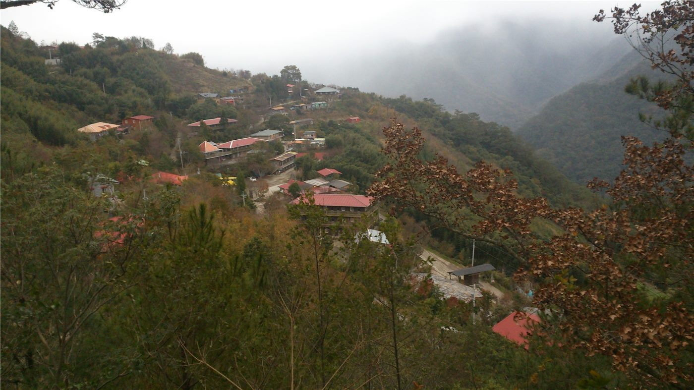

쓰촨 산간 지역 대규모 산사태… 당국 '인명 피해 없어'
중국 쓰촨성 산간 지역에서 대규모 산사태가 발생해 민가가 매몰됐다. 관영 매체는 당국을 인용해 사망자와 부상자가 없다고 전했다.
유종한 기자 · 2026.09.22
橋중국

쓰촨성의 한 산간 지역에서 대규모 산사태가 발생했다. 흙과 암석이 비탈을 타고 내려오면서 인근 민가가 매몰된 장면이 공개됐다.
광고 문의 · 300×250중국 관영 매체는 당국의 발표를 인용해 이번 사고로 인한 사망자와 부상자는 없다고 전했다. 사전 대피가 이뤄졌는지 여부와 구체적인 피해 규모는 추가로 확인돼야 한다.
쓰촨은 지형이 가파르고 단층이 발달해 산사태가 잦은 지역이다. 여름과 초가을 집중호우 뒤에는 지반이 약해져 붕괴 위험이 높아진다.
반복되는 지형의 조건
산사태 대비의 핵심은 사후 구조보다 사전 감시다. 경사면 변위 계측과 강우량 연동 경보, 그리고 위험 구역 주민의 이주가 실질적인 수단으로 꼽힌다.
중국은 최근 수년간 지질재해 감시망을 확대해 왔다. 다만 산간 마을은 접근로가 제한적이어서, 경보가 울려도 이동 경로 자체가 막히는 경우가 있다.
이번 사고에서 인명 피해가 보고되지 않은 것은 감시와 대피가 작동했을 가능성을 시사한다. 정확한 경위는 당국의 조사 결과를 기다려야 한다.
한국과 대만에도 비슷한 조건의 산간 취락이 있다. 태풍과 집중호우가 지나간 뒤 지반이 머금은 물이 빠지기까지 며칠간 위험이 남는다는 점은 공통된다.